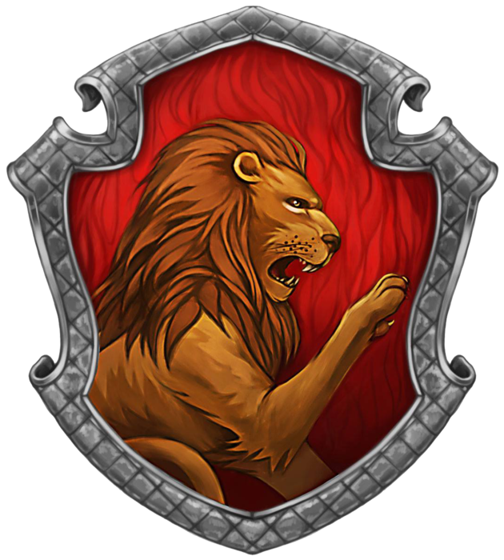
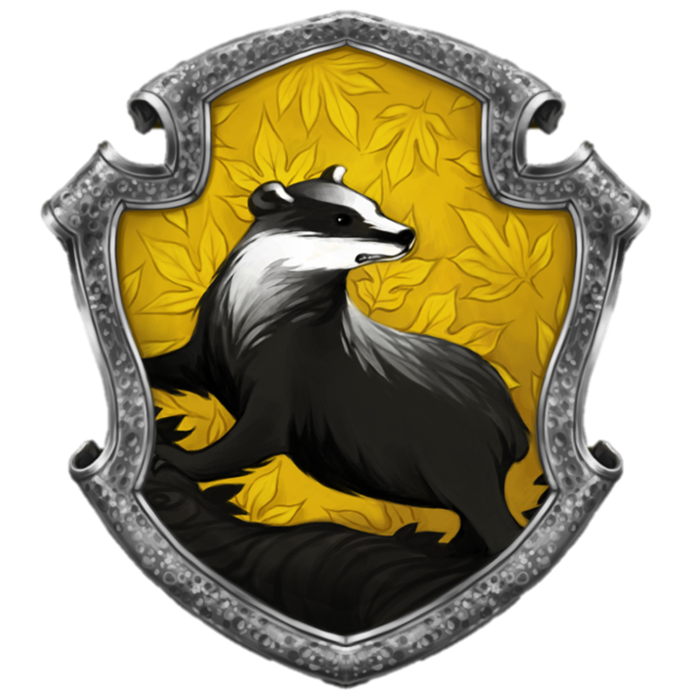
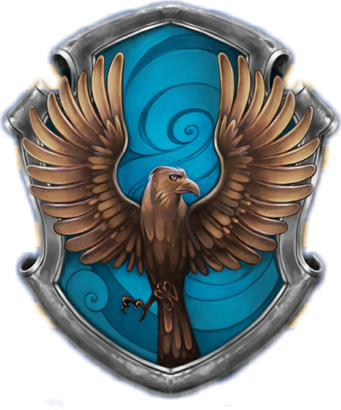
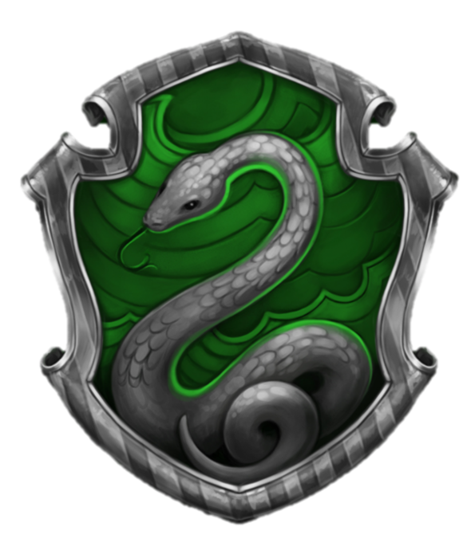

Benvenuto alla Scuola di Magia e Stregoneria di Hogwarts!
Caro futuro mago o strega,
Una lettera speciale è arrivata per te! Hogwarts ti sta invitando ad iniziare un viaggio straordinario nel mondo della magia. Qui, tra antiche mura e misteriose creature, imparerai incantesimi, pozioni e segreti millenari. Ma prima di intraprendere questa incredibile avventura, c'è una cosa importante da fare...
Per favore, dicci il tuo nome, così potremo prepararti per la tua magica avventura!
Carissimo [Nome del Mago],
Abbiamo il piacere di informarti che sei stato ufficialmente accettato alla Scuola di Magia e Stregoneria di Hogwarts! Prepara la tua bacchetta e mettiti comodo, perché ti stai per immergere in un mondo straordinario, dove ogni angolo nasconde misteri, avventure e possibilità infinite.
Inizia il tuo viaggio nelle magiche aule della scuola, dove potrai studiare incantesimi, pozioni e tutto ciò che riguarda il mondo della magia. Avrai l'opportunità di incontrare i nostri esperti professori, come il saggio Professor Flitwick, la gentile Professor McGonagall, e tanti altri insegnanti che ti guideranno nel tuo cammino.
Ma non è tutto! Hogwarts è divisa in quattro prestigiose casate, ciascuna con le sue caratteristiche uniche e i suoi valori. Da un lato, c'è la valorosa Grifondoro, con il coraggio e l'onore dei suoi membri; dall'altro, Tassorosso, che celebra il duro lavoro e la lealtà; Corvonero, una casa per i più saggi e ingegnosi; e infine, Serpeverde, la casa dell'ambizione e della determinazione.
In seguito, dovrai scegliere in quale casata vuoi entrare. Ogni casata ha una lunga tradizione e, come tutti i nostri studenti, avrai la possibilità di lasciare un'impronta indelebile nella storia della scuola.
Scegli la tua casata preferita

Grifondoro, la casa fondata dal leggendario Godric Grifondoro, è senza dubbio la più iconica e audace tra le quattro...

Tassorosso, fondata dalla saggia Helga Tassorosso, è la casa che più di tutte incarna i valori della lealtà...

Corvonero, la casa fondata dalla brillante Rowena Corvonero, è la scelta ideale per chi è appassionato di conoscenza...

Serpeverde, fondata dal potente Salazar Serpeverde, è la casa che attrae gli studenti più ambiziosi e determinati...
Pronto per il quiz?
Scegli la risposta giusta e scopri la tua vera casata!